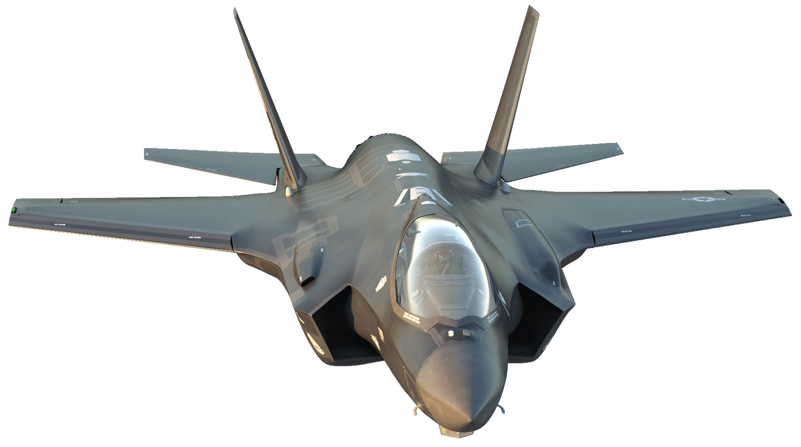
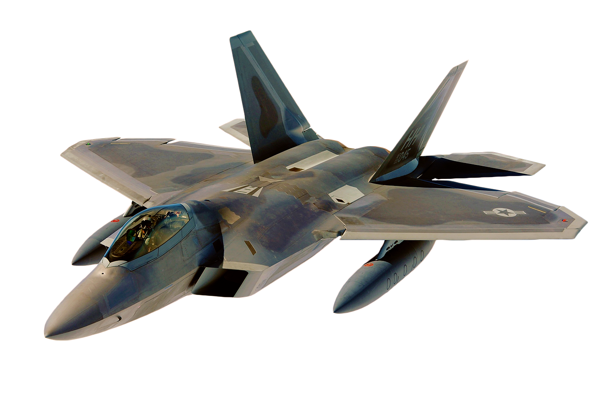

Los mejores aviones de combate
descubre los mejores aviones y aprende mas curiosidades sobre estos aviones sorprendentes
descubre los mejores aviones y aprende mas curiosidades sobre estos aviones sorprendentes
El F35 Lightning II es un avión de combate furtivo, supersónico y multifunción. Es el caza más avanzado del mundo y está en servicio de las fuerzas de defensa de Estados Unidos y sus aliados, ademas puede llevar armas internas o externas, según la misión, y puede transportar una gran cantidad de municiones.

El F22 tiene un diseño que le permite elevarse por encima de la mayoría de las amenazas y del tráfico aéreo comercial. Su gran altitud le otorga ventajas como: Rendimiento mejorado del sensor, Mayor maniobrabilidad, ademas es capaz de alcanzar Mach 2.2 (más del doble de la velocidad del sonido), el F-22 lleva seis misiles AMRAAM de medio/largo alcance y dos Sidewinder para atacar objetivos a distancias cortas. Su habilidad de sigilo le permite atacar a sus enemigos sin ser visto.
